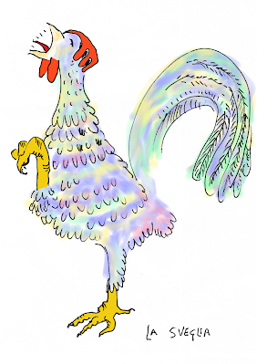
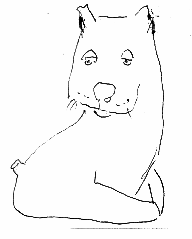
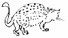

Mia é lo pseudonimo usato come firma alle sue ultime poesie. Lei era femminista, insegnante di disegno, pittrice, ceramista, operaia in una fabbrica di ceramica, artista, madre. Negli ultimi anni, ha scritto, alcune poesie, perché sentiva che voleva comunicare, voleva esprimersi. Fino ad allora le mani avevano guidato, matite e pennelli, con il passare del tempo si rendeva conto che non poteva più controllare i suoi tratti. Stava diventando cieca. Queste sono alcune delle sue poesie, scritte in maniera schietta, visive e senza artifici, rispecchiano gli ultimi suoi anni, ed il suo immaginario più visivo che verbale, sonoro.
Matteo Pedani
Io vorrei
Una cuccia, una tana una culla
e anche un nido,
per ogni creatura che ha da nascere
che sia stata preparata
con un sorriso.
Io vorrei
che il mondo fosse in fiore
e l’universo in pace, musica, morbido sole.
Non pene o pianti, non scosse
o fuoco o baruffe
se non per giuoco.
E quando l’ora scade,
che sorella morte,
alla porta si accosti
dolcemente.
E così con mano leggera prema
e s involi con la creatura.
Così io vorrei.
Dedicata a Pontremoli
Ripide le quattro sponde,
scivolano dal monte
con le tue vecchie pietre,
ponti, castelli, palazzi costruisci.
Ho bella del Piagnaro,
portano le tue acque
libri di pietra e di sapere,
al mare, al mondo.
Sognando Giugno
Carezza invisibile il vento
e danza, nel campo di grano
fra onde già bionde le spighe,
i verdi, i celesti, rosseggia il papavero
vano.
Sorride,riflesso del cielo
l’azzurro del bel fiordaliso
e l’upupa stride regina
vestita di beige e turchino.
Il merlo si sporge e pilucca
i frutti già pronti di more.
Profumo nell’aere forte,
di miele di fiori di sambuco
di tiglio; tu prendi con man
che non coglie
il roseo fiore di timo.

a Serena
Lunghe dita come farfalle leggere
azzurri, indaco e colori infiniti
pongono;
a volte come memoria
o sogni,forti di cultura antica.
Moderna Artemisia,
senza il suo tormento, ma
serena consapevolezza ti pervade
Il Cane
Muove le orecchie, il cane
si esprime con le orecchie il cane,
le drizza le piega delicatamente.
A volte impercettibilmente per gli umani.
Tagliano le orecchie ai cani gli umani,
il cane muove la coda e la sventola
felice.
Se sgridato la tiene fra le gambe
è chiaro il significato
anche agli umani.
Allegria, amore tutto così esprimono i cani.
A volte al cane tagliano anche la coda
gli uomini.
Come si può esprimere il cane?

Mia
novembre 2008
